スマートホームの統合により、Googleアシスタントはユーザーの家に接続されているデバイスを制御できます。スマートホームアクションを構築するには、 スマートホームインテント を処理できるクラウドWebhookエンドポイントを提供する必要があります。たとえば、ユーザーが「Hey Google, turn on the light,」と言うと、アシスタントはクラウドフルフィルメントにコマンドを送信してデバイスの状態を更新します。
Local Home SDKは、スマートホームインテントをGoogle Homeデバイスに直接ルーティングするローカルパスを追加することでスマートホームの統合を強化します。これにより、信頼性が向上し、ユーザーのコマンド処理の待ち時間が短縮されます。 TypeScriptまたはJavaScriptでローカルフルフィルメントアプリを作成してデプロイし、デバイスを識別して、GoogleHomeスマートスピーカーまたはGoogleNestスマートディスプレイでコマンドを実行できます。そして、アプリが既存の標準プロトコルを使用してコマンドを実行することにより、ローカルエリアネットワークを介してユーザーの既存のスマートデバイスと直接通信します。
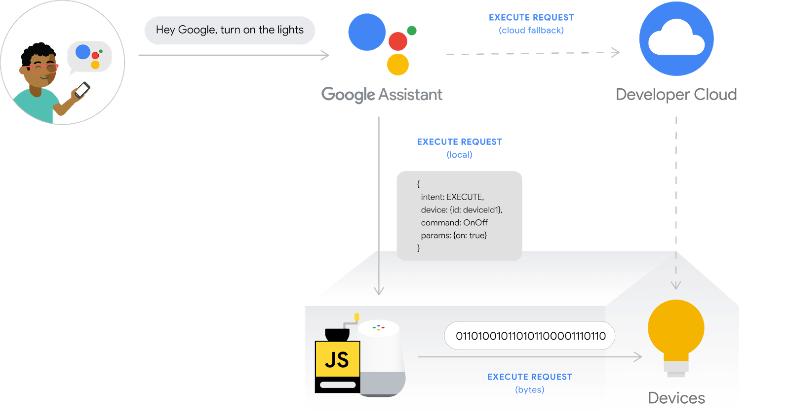
スマートホームアクションのデバッグは、本稼働時の品質でアクションを構築するための重要なステップですが、有益で使いやすいトラブルシューティングおよびテストツールがないと、困難で時間がかかります。スマートホームアクションのデバッグを容易にするために、 Google Cloud Platform (GCP) Metrics and Logging および Test Suite for smart home を使用して、アクションの問題を特定して解決することができます。
このコードラボでは、スマートホームアクションのローカルフルフィルメントを作成してアシスタントに接続し、 Test Suite for smart home と Google Cloud Platform (GCP) Metrics and Logging を介してローカルホームアプリをデバッグします。
開発マシンにこのコードラボのサンプルをダウンロードするために、以下のリンクをクリックします。
...または、コマンドラインからGitHubリポジトリをcloneすることもできます。
$ git clone https://github.com/googlecodelabs/smarthome-debug-local.git
スターターアプリには、 Enable local fulfillment for smart home Actions コードラボと同様のサブディレクトリと Cloud Functions が含まれています。しかし、 app-start の代わりに、ここでは app-faulty があります。まず、機能するがそれほどうまく機能しないローカルホームアプリから始めます。
Enable local fulfillment for smart home Actions コードラボで作成したものと同じプロジェクトを使用しますが、このコードラボでダウンロードしたファイルをデプロイします。
app-faulty ディレクトリに移動し、 Enable local fulfillment for smart home Actions コードラボで作成したアクションプロジェクトを使用してFirebaseCLIを設定します。
$ cd app-faulty $ firebase use <project-id>
app-faulty/functions フォルダーに移動し、npm を使用して必要なすべての依存関係をインストールします。
$ cd functions $ npm install
Note: 以下のメッセージが表示された場合は、無視して続行できます。警告はいくつかの古い依存関係によるものであり、詳細については こちら をご覧ください。
found 5 high severity vulnerabilities run `npm audit fix` to fix them, or `npm audit` for details
app-faulty/local/ ディレクトリに移動し、次のコマンドを実行してTypeScriptコンパイラをダウンロードし、アプリをコンパイルします。
$ cd ../local $ npm install $ npm run build
これにより、index.ts (TypeScript) ソースがコンパイルされ、次のコンテンツが app-faulty/public/local-home/ ディレクトリに配置されます。
bundle.js - ローカルアプリと依存関係を含むコンパイル済みJavaScript出力。index.html - デバイス上のテスト用にアプリを提供するために使用されるローカルホスティングページ。依存関係をインストールしてプロジェクトを構成したので、アプリを初めて実行する準備が整いました。
$ firebase deploy
これはあなたが見るべきコンソールの出力です。
... ✔ Deploy complete! Project Console: https://console.firebase.google.com/project/<project-id>/overview Hosting URL: https://<projectcd -id>.web.app
このコマンドは、いくつかの Cloud Functions for Firebase と共に、Webアプリをデプロイします。
ブラウザで Hosting URL (https://) を開いて、Webアプリを表示します。 Web UIで Refresh ボタンをクリックして、 Request Sync を介して、障害のあるウォッシャーアプリからの最新のデバイスメタデータでHomeGraphを更新します。
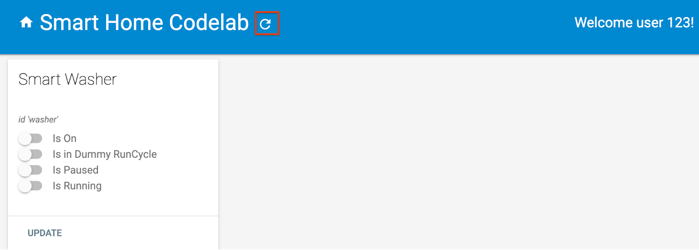
Google Home アプリを開き、"Faulty Washer" という新しい名前の洗濯機デバイスが表示されることを確認します。 Nestデバイスがある部屋にデバイスを割り当てることを忘れないでください。
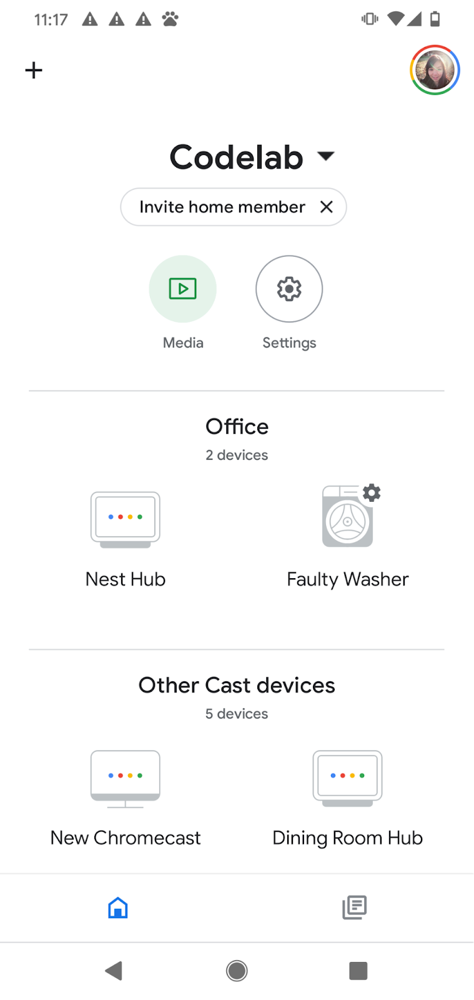
もし Enable local fulfillment for smart home Actions コードラボを行っていた場合は、仮想スマートウォッシャーを既に開始しているはずです。停止している場合は、仮想デバイスを再起動することを忘れないでください。
virtual-device/ ディレクトリに移動し、デバイススクリプトを実行して、構成パラメータを引数として渡します。
$ cd ../../virtual-device $ npm install $ npm start -- \ --deviceId=deviceid123 --projectId=<project-id> \ --discoveryPortOut=3311 --discoveryPacket=HelloLocalHomeSDK
期待したパラメータを使ってデバイススクリプトが実行されたか確認します。
(...): UDP Server listening on 3311 (...): Device listening on port 3388 (...): Report State successful
次のようなコマンドをGoogle Homeデバイスへの音声コマンドを介してデバイスに送信します。
"Hey Google, turn on my washer."
"Hey Google, start my washer."
"Hey Google, force local."
"Hey Google, stop my washer."
"force local" の後に洗濯機を制御しようとすると、Googleアシスタントが "Sorry, it looks like the Faulty Washer isn't available right now" と応答することがわかります。
これは、デバイスがローカルパスを介して到達できないことを意味します。 "Hey Google, force local" を発行する前は、機能しました。これは、デバイスがローカルパスを介して到達できない場合に、クラウドパスの使用にフォールバックするためです。ただし、"force local" の後、クラウドパスにフォールバックするオプションは無効になります。
問題が何であるかを見つけるために、私たちが持っているツールを利用しましょう: Google Cloud Platform (GCP) Metrics andLogging と Chrome DevTools
次のセクションでは、Googleが提供するツールを使用して、ローカルパスを介してデバイスに到達できない理由を確認します。 Google Chrome Developer Tools を使用して Google Home デバイスに接続し、コンソールログを表示して、ローカルホームアプリをデバッグできます。カスタムログを Cloud Logging に送信して、ユーザーがローカルホームアプリで見つけている上位のエラーを認識できるようにすることもできます。
デバッガーをローカルフルフィルメントアプリに接続するには、次の手順に従います。
chrome://inspect と入力して、インスペクターを起動します。ページにデバイスのリストが表示され、アプリのURLが Google Home デバイスの名前の下に表示されます。
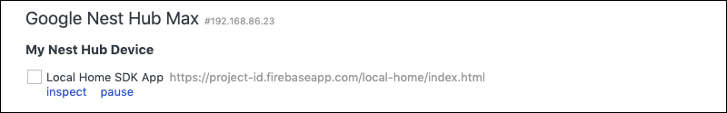
アプリのURLの下にある Inspect をクリックして、Chrome Developer Tools を起動します。 Console タブを選択し、TypeScript アプリによって出力された IDENTIFY インテントのコンテンツが表示されることを確認します。
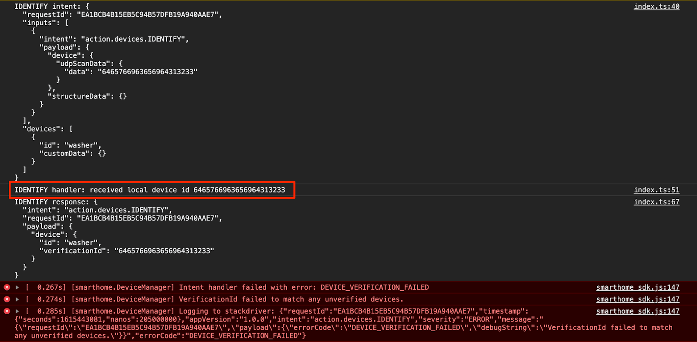
この出力は、IDENTIFY ハンドラーが正常にトリガーされたが、 IdentifyReponse で返された verificationId が HomeGraph 内のどのデバイスとも一致しないことを意味します。理由を調べるために、いくつかのカスタムログを追加しましょう。
Local Home SDKによって出力された DEVICE_VERIFICATION_FAILED エラーがありますが、根本的な原因を見つけるのにあまり役立ちません。スキャンデータを正しく読み取って処理していることを確認するために、いくつかのカスタムログを追加しましょう。エラーでプロミスを拒否すると、エラーメッセージは実際には Cloud Logging にも送信されることに注意してください。
identifyHandler(request: IntentFlow.IdentifyRequest):
Promise<IntentFlow.IdentifyResponse> {
console.log("IDENTIFY intent: " + JSON.stringify(request, null, 2));
const scanData = request.inputs[0].payload.device.udpScanData;
if (!scanData) {
const err = new IntentFlow.HandlerError(request.requestId,
'invalid_request', 'Invalid scan data');
return Promise.reject(err);
}
// In this codelab, the scan data contains only local device id.
// Is there something wrong here?
const localDeviceId = Buffer.from(scanData.data);
console.log(`IDENTIFY handler: received local device id
${localDeviceId}`);
// Add custom logs
if (!localDeviceId.toString().match(/^deviceid[0-9]{3}$/gi)) {
const err = new IntentFlow.HandlerError(request.requestId,
'invalid_device', 'Invalid device id from scan data ' +
localDeviceId);
return Promise.reject(err);
}
const response: IntentFlow.IdentifyResponse = {
intent: Intents.IDENTIFY,
requestId: request.requestId,
payload: {
device: {
id: 'washer',
verificationId: localDeviceId.toString(),
}
}
};
console.log("IDENTIFY response: " + JSON.stringify(response, null, 2));
return Promise.resolve(response);
}また、ローカルホームアプリのバージョンを変更して、正しいバージョンを使用しているかどうかを識別できるようにします。
const localHomeSdk = new App('1.0.1');カスタムログを追加した後、アプリを再度コンパイルしてFirebaseに再デプロイする必要があります。
$ cd ../app-faulty/local $ npm run build $ firebase deploy --only hosting
次に、Google Homeデバイスを再起動して、更新されたローカルホームアプリを読み込めるようにします。 メトリクスとロギングメトリクスとロギングChrome Developer Tools の Console ログを確認すると、Google Home デバイスが期待されるバージョンを使用しているかどうかを確認できます。
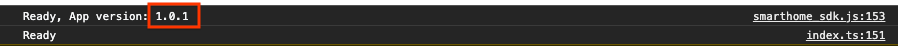
Cloud Logging を使用してエラーを見つける方法を見てみましょう。プロジェクトの Cloud Logging にアクセスするには以下の手順を行います。
ロギングデータへのアクセスは、アクションプロジェクトのユーザーのIdentity and Access Management（IAM）を介して管理されます。データをログに記録するための役割と権限の詳細については、Cloud Logging access control を参照してください。
ローカルデバイスの識別に失敗したためにローカルパスが機能していないため、 IDENTIFY インテントでエラーが発生していることがわかっています。ただし、問題が何であるかを正確に知りたいので、最初に IDENTIFY ハンドラーで発生するエラーを除外しましょう。
Query preview ボックスを展開すると、 Query builder ボックスに変わります。 Query builder ボックスに jsonPayload.intent = 'IDENTIFY' と入力し、 Run query ボタンをクリックします。
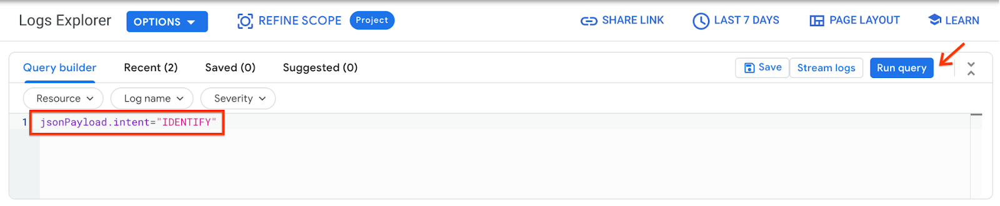
その結果、 IDENTIFY ハンドラーでスローされるすべてのエラーログを取得します。次に、最後のエラーを展開します。 IDENTIFY ハンドラーで promise を拒否するときに設定した errorCode と debugString があります。
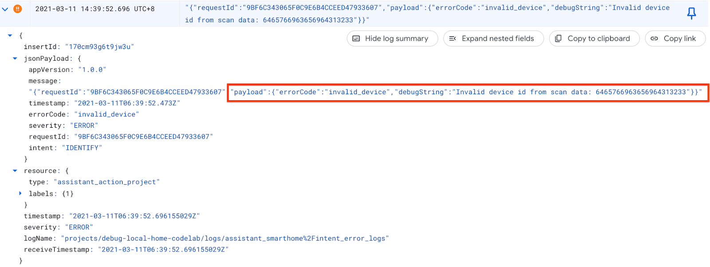
debugString から、ローカルデバイスIDが予期された形式ではないことがわかります。ローカルホームアプリは、ローカルデバイスIDを deviceid で始まり3桁の数字が続く文字列として取得することを想定していますが、ここでのローカルデバイスIDは16進文字列です。
スキャンデータからローカルデバイスIDを解析するソースコードに戻ると、文字列をバイトに変換するときにエンコードが提供されていないことがわかります。スキャンデータは16進文字列として受信されるため、 Buffer.from() を呼び出すときに文字エンコードとして hex を渡します。
identifyHandler(request: IntentFlow.IdentifyRequest):
Promise<IntentFlow.IdentifyResponse> {
console.log("IDENTIFY intent: " + JSON.stringify(request, null, 2));
const scanData = request.inputs[0].payload.device.udpScanData;
if (!scanData) {
const err = new IntentFlow.HandlerError(request.requestId,
'invalid_request', 'Invalid scan data');
return Promise.reject(err);
}
// In this codelab, the scan data contains only local device id.
const localDeviceId = Buffer.from(scanData.data, 'hex');
console.log(`IDENTIFY handler: received local device id
${localDeviceId}`);
if (!localDeviceId.toString().match(/^deviceid[0-9]{3}$/gi)) {
const err = new IntentFlow.HandlerError(request.requestId,
'invalid_device', 'Invalid device id from scan data ' +
localDeviceId);
return Promise.reject(err);
}
const response: IntentFlow.IdentifyResponse = {
intent: Intents.IDENTIFY,
requestId: request.requestId,
payload: {
device: {
id: 'washer',
verificationId: localDeviceId.toString(),
}
}
};
console.log("IDENTIFY response: " + JSON.stringify(response, null, 2));
return Promise.resolve(response);
}また、ローカルホームアプリのバージョンを変更して、正しいバージョンを使用しているかどうかを識別できるようにします。
const localHomeSdk = new App('1.0.2');エラーを修正したら、アプリをコンパイルしてFirebaseに再デプロイします。 app-faulty/local で、次を実行します。
$ npm run build $ firebase deploy --only hosting
デプロイ後、Google Homeデバイスを再起動して、更新されたローカルホームアプリを読み込めるようにします。ローカルホームアプリのバージョンが1.0.2であることを確認してください。今回は、Chrome DevTools Console にエラーが表示されないはずです。
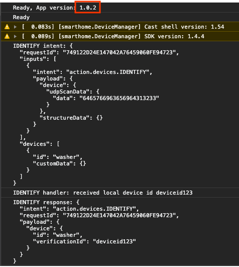
これで、デバイスへのコマンドの送信を再試行できます。
"Hey Google, force local."
"Hey Google, stop my washer."
"Hey Google, turn on my washer."
...
"Hey Google, force default."
Google Homeアプリのタッチコントロールまたは音声コマンドを使用してデバイスを確認した後、 Test Suite for smart home を使用して、アクションに関連付けられたデバイスタイプとトレイトに基づいてユースケースを検証できます。 Test Suiteは、一連のテストを実行してアクションの問題を検出し、失敗したテストケースに関する有益なメッセージを表示して、イベントログに飛び込む前にデバッグを迅速化します。
テストスイートによるスマートホームアクションをテストするには、次の手順に従います。
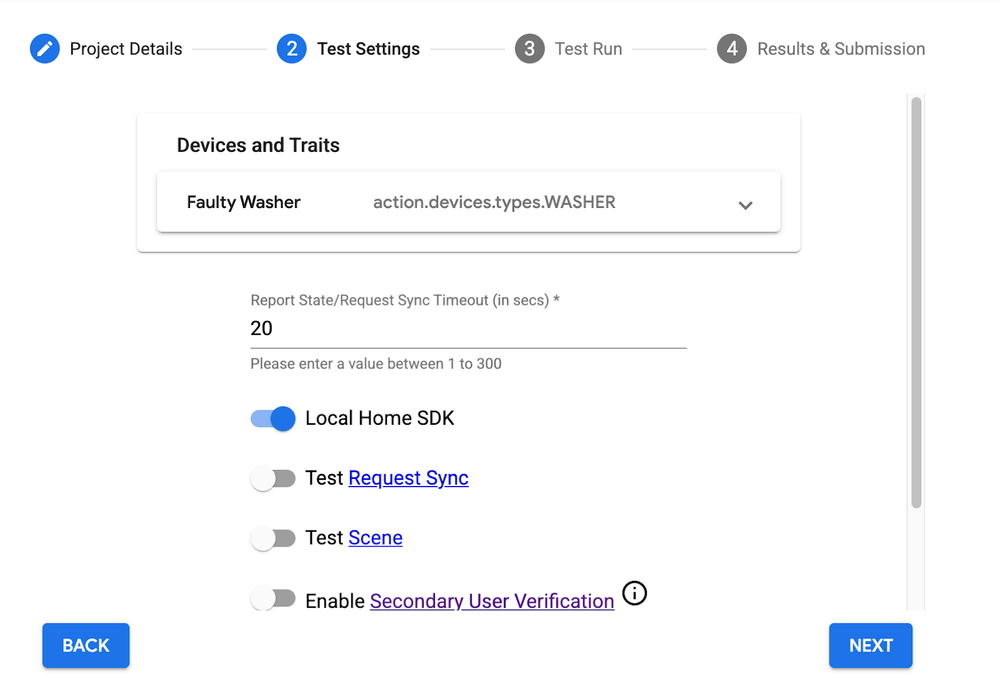
テストが完了すると、ローカルパスの一時停止/再開テストが失敗し、クラウドパスの一時停止/再開テストに合格していることがわかります。
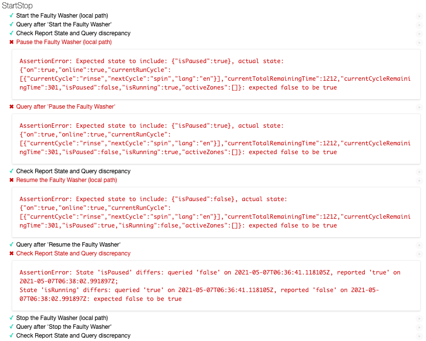
失敗したテストケースのエラーメッセージを詳しく見てみましょう。それらは、そのテストの予想される状態と実際の状態を教えてくれます。この場合、 "Pause the Washer" に対して期待される状態は isPaused:true ですが、実際の状態では isPaused:false になります。同様に、 "Pause the Washer" の場合、期待される状態は isPaused:true ですが、実際の状態では isPaused:false になります。
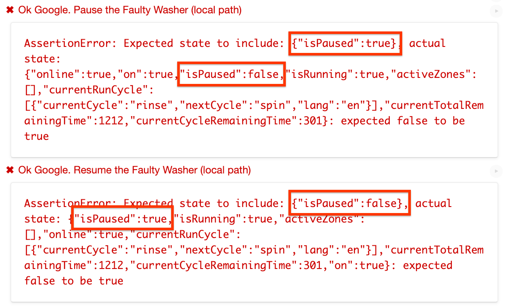
エラーメッセージから、ローカルパスのように見えます。 isPaused 状態を逆に設定しています。
ローカルホームアプリが実行コマンドをデバイスに送信するソースコードを見つけましょう。 getDataCommand() は、 executeHandler() によって呼び出される関数であり、デバイスに送信される実行コマンドの payload を設定します。
getDataForCommand(command: string, params: IWasherParams): unknown {
switch (command) {
case 'action.devices.commands.OnOff':
return {
on: params.on ? true : false
};
case 'action.devices.commands.StartStop':
return {
isRunning: params.start ? true : false
};
case 'action.devices.commands.PauseUnpause':
return {
// Is there something wrong here?
isPaused: params.pause ? false : true
};
default:
console.error('Unknown command', command);
return {};
}
}実際、 isPause を逆の状態に設定しています。 params.pause が true の場合は true に設定し、それ以外の場合は false に設定する必要があります。だから、それを修正しましょう。
getDataForCommand(command: string, params: IWasherParams): unknown {
switch (command) {
case 'action.devices.commands.OnOff':
return {
on: params.on ? true : false
};
case 'action.devices.commands.StartStop':
return {
isRunning: params.start ? true : false
};
case 'action.devices.commands.PauseUnpause':
return {
isPaused: params.pause ? true : false
};
default:
console.error('Unknown command', command);
return {};
}
}ローカルホームアプリのバージョンを変更して、正しいバージョンを使用しているかどうかを識別できるようにします。
const localHomeSdk = new App('1.0.3');アプリを再度コンパイルして、Firebaseに再デプロイすることを忘れないでください。 app-faulty/local で、次を実行します。
$ npm run build $ firebase deploy --only hosting
次に、Google Homeデバイスを再起動して、更新されたローカルホームアプリを読み込めるようにします。ローカルホームアプリのバージョンが1.0.3であることを確認してください。
ここで、同じ構成でスマートホームのテストスイートを再実行すると、すべてのテストケースに合格していることがわかります。
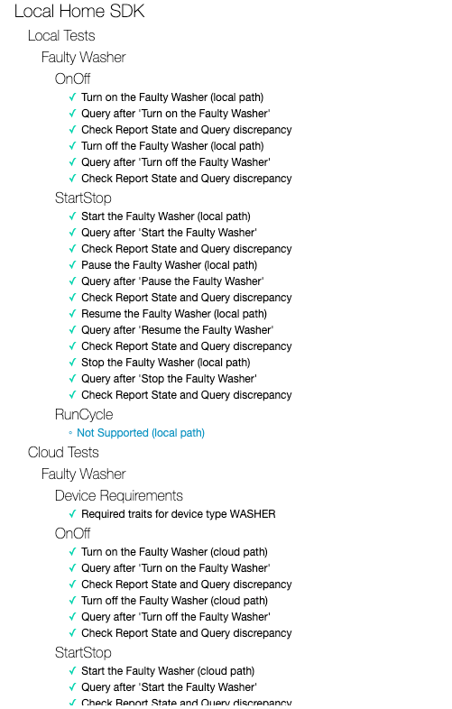
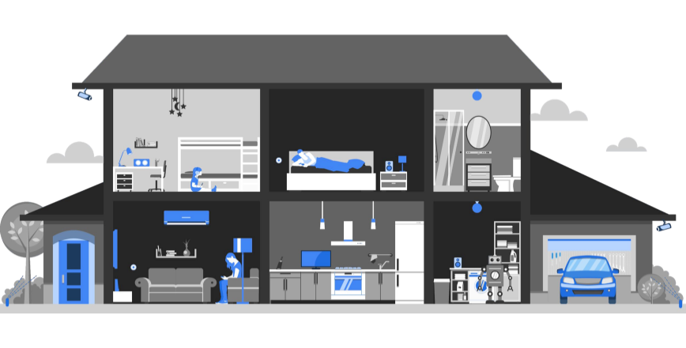
おめでとう！Test Suite for smart home と Cloud Logging を介して、ローカルホームアプリのトラブルシューティング方法を正常に学習しました。
ここに、あなたが挑戦することができるいくつかの追加のリソースがあります。
また、アクションをユーザーに公開するための認証プロセスなど、レビューのためにアクションを テストして提出する 方法についても学ぶことができます。